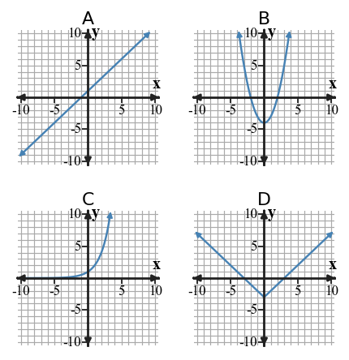

Start with what you can solve independently. Then find different classmates to compare reasoning or help with problems you have not completed. Record your own work and have each partner initial one problem they discussed with you.
A residual is actual value minus predicted value. If actual is $48$ and predicted is $45$, find the residual.
Use the scatter plot to describe the association as positive, negative, or no clear association.

| Practice days | 1 | 2 | 3 | 4 | 5 |
|---|---|---|---|---|---|
| Free throws made | 11 | 14 | 15 | 19 | 22 |
Draw a reasonable line of fit on the blank scatter plot axes, write an approximate model, and use it to predict day $8$.

A model has equation $y=12x+5$. Analyze the structure of the model: what does the slope assume about the data pattern, and what would make that assumption weak?
Which equation has slope $-{2}$? A: $y={2}x-4$ B: $y=-{2}x+7$ C: $y=x-2$
For $y={6}x+1$, find $y$ when $x={4}$.
Plan A starts with ${6}$ points and adds ${4}$ each week. Plan B starts with ${18}$ points and adds ${1}$ each week. Write equations and find the week when Plan A first becomes greater.
Relationship A is given by $y={3}x+2$. Relationship B is shown in the table. Compare starting values and rates.
| $x$ | 0 | 1 | 2 | 3 |
|---|---|---|---|---|
| B | 8 | 10 | 12 | 14 |
A graph shows a line through $({0},{5})$ and $({4},{17})$. A table shows outputs ${2}$, ${8}$, ${14}$, ${20}$ for inputs ${0}$, ${2}$, ${4}$, ${6}$. Compare the rates of change.
Analyze the pattern two ways: by calculating repeated differences and by writing a rule from the starting value and rate. Explain how each method predicts Figure ${15}$.
| Figure | 0 | 1 | 2 | 3 | 4 |
|---|---|---|---|---|---|
| Tiles | 6 | 10 | 14 | 18 | 22 |
A graph passes through $({0},{6})$, $({2},{14})$, and $({4},{22})$. A table shows $x$-values ${0}$, ${2}$, ${4}$ with outputs ${6}$, ${14}$, ${23}$. A context says the amount starts at ${6}$ and increases by ${4}$ for each input step. Construct a strategy for testing whether all three representations show the same constant rate of change. Your strategy must include at least three checks.
Create a coordinate graph with constraints: the $y$-intercept must be ${6}$, one point must be $({4},{14})$, and the context must make negative outputs unreasonable. Then explain why your graph satisfies all constraints.

The equation $y=x^2+3$ belongs to which common family?
The equation $y=2|x-5|+1$ belongs to which common family?
Use the grid to build evidence, not just a shape match. For each panel, estimate three ordered pairs or describe a rate, ratio, or symmetry feature from the axes. Then name the likely family and connect it to that evidence.

A concert ticket costs \$18 plus a \$4 service fee. A student writes $18+4t=90$ to find the number of tickets bought with \$90. Decide whether the model is reasonable and revise it if needed.